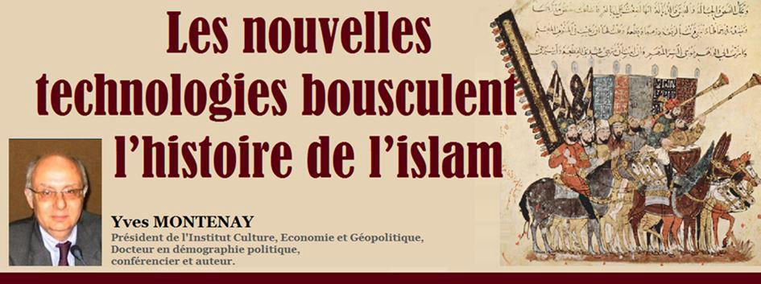
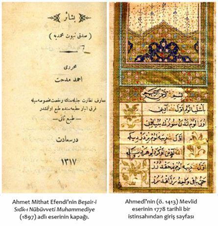

Les nouvelles technologies bousculent l’histoire de l’islam
par Yves MONTENAY

L’histoire de l’islam est ressentie comme certaine et bien connue, au moins pour les croyants. Cette histoire est officielle, et y toucher est ressenti comme blasphématoire, donc puni de mort dans beaucoup de pays musulmans.
Elle est néanmoins remise en cause par certains universitaires, soutenus par les avancées de l’intelligence artificielle.
Yves Montenay est intervenu sur le contenu de cet article dans l’émission « Il était une fois… » du 10 juillet 2020 présentée par Patrick Simon « Quand les nouvelles technologies bouleversent l’histoire des religions » sur Radio Courtoisie 1.
Pourquoi l’histoire de l’islam est-elle si importante ?
Le débat sur l’origine des textes saints de l’islam est aussi ancien que cette religion, mais il a rebondi récemment du fait de nouvelles technologies permettant une analyse massive des textes des septième, huitième et neuvième siècles.
Ce débat est important, non seulement parce que c’est l’occasion d’un progrès de la connaissance historique, mais aussi parce que l’islam est soumis à la pression de courants, notamment salafistes, qui poussent au retour « aux fondements de la religion », « au mode de vie du prophète » etc.
Ces courants sont soutenus notamment par la puissante propagande saoudienne et mettent en péril les régimes politiques des pays musulmans 2 « normaux » comme le Sénégal3, l’Indonésie et bien d’autres. Or si ces fondements, notamment la vie du prophète, sont remis en question, ce « retour aux sources » vide de son sens l’argumentation des activistes.
Une autre raison de l’intérêt de ce débat est l’apparition de groupes de musulmans et d’ex musulmans modernistes, agnostiques ou athées, tant dans les pays plus ou moins laïques (l’Occident mais aussi l’Inde et bien d’autres), que dans les pays officiellement musulmans.
Ces groupes font face à une forte pression sociale, familiale ou politique, et ont besoin de pouvoir s’appuyer sur des arguments leur donnant une certaine liberté intellectuelle.
Dans cet article, je vais d’abord exposer les nouvelles technologies qui permettent ces analyses historiques.
Je rappellerai ensuite l’histoire officielle à laquelle adhèrent aujourd’hui la quasi-totalité de ceux qui connaissent l’islam, qu’ils soient musulmans ou non.
Enfin, j’exposerai les conclusions des divers courants intellectuels qui ont analysé cette période.
Un nouvel outil d’analyse historique : l’intelligence artificielle
L’intelligence artificielle est en train de bousculer l’histoire de la naissance de l’islam car elle permet de brasser une énorme quantité de documents.
On peut ainsi par exemple dater la naissance de telle idée en analysant les langues en usage à l’époque et leur évolution dans le temps.
On peut également rapprocher des formulations très dispersées entre les régions du Moyen-Orient et leurs diverses langues et religions, ce qu’un chercheur érudit n’a pas le temps de faire même en y consacrant toute sa vie.
Pensez par exemple à la production des multiples évêchés concurrents des chrétiens de ces 3 siècles qui ont vu s’installer la domination arabe. En effet, le Moyen-Orient, Arabie comprise, était à l’époque largement chrétien et par ailleurs parsemé de communautés juives.
L’histoire officielle de l’islam
Cette histoire s’appuie sur le Coran « dicté par Dieu à Mahomet », la Sira, biographie décrivant la vie de Mahomet, et les hadiths, transmission orale des paroles de Mahomet, transmises de bouche-à-oreille pendant des générations avant d’être couchées par écrit.
Ce sont évidemment ces derniers, les hadiths, qui sont considérés par tous, musulmans compris, comme la source la moins sûre et un tri a été fait par des érudits persans qui ont éliminé la plupart du million et demi (!) d’hadiths et classé les milliers restant en plus ou moins certains.
Le Coran lui-même est traditionnellement divisé en sourates, ensembles de versets du Coran, « mecquoises » et « médinoises ».
Les sourates « mecquoises » ont été reçues de Dieu alors que Mahomet était le mari d’une riche bourgeoise de la Mecque et pouvait se recueillir dans le désert.
Leur contenu est plutôt religieux avec, pour commencer, la proclamation d’un Dieu unique, par opposition aux idoles et à la Trinité.
Par contre les sourates « médinoises » ont été reçues à l’époque où Mahomet, veuf et exilé, était devenu le chef d’une communauté basée à Médine.
Elles énoncent donc des règles concrètes de la vie sociale (les rapports avec les autres groupes, juifs notamment, des règles juridiques avec le témoignage, l’héritage etc.)
Je ne vais pas traiter ici du contenu religieux ou juridique du Coran, qui est d’ailleurs difficile à comprendre du fait de sa langue archaïque, de ses allusions imprécises et de ses paraboles. Par exemple les exégètes sont souvent en désaccord sur la nature des ennemis dénoncés (chrétiens ? idolâtres ? tribu ennemie ?), ambiguïtés qui apparaissent lors des traductions.
Je vais ici seulement évoquer l’imprégnation du monde musulman et de la plupart de ses observateurs par cette histoire officielle.
Son ancrage profond dans les esprits
L’imprégnation des esprits commence en général au début de l’enseignement primaire ou dans les écoles coraniques. L’apprentissage des lettres arabes s’y fait souvent à partir du début du Coran, que les enfants mémorisent donc sans le comprendre, ce qui en fait une référence commune profondément ancrée.
Cette histoire officielle précise que le Coran a été rédigé en 647 soit 15 ans après la mort de Mahomet sur la base des souvenirs ou des notes rassemblées par les fidèles sous le contrôle du calife Othman.
La vie officielle de Mahomet est également enseignée à partir de la Sîra.
L’aspect hagiographique et légendaire de ce texte saute aux yeux des non-musulmans, mais pour le croyant de base, c’est « la vérité tout court ». Toute histoire alternative est évidemment considérée comme une atteinte à la religion, voire comme un blasphème puni de mort dans de nombreux pays.
Entre un Coran difficilement compréhensible, une Sira légendaire (pas plus que la Bible diront certains) et des hadiths souvent douteux, le musulman « de base » ne connaît donc finalement de sa propre religion que ce qui lui vient du pouvoir politique, via les programmes scolaires ou via les instructions données aux imams.
Aujourd’hui, cette connaissance est complétée, ou déformée, par des télévangélistes en général dépendant de l’Arabie4, donc wahhabites.
D’où finalement une vue traditionaliste à des degrés très divers selon les pays, l’Asie du Sud-Est et l’Afrique subsaharienne étant plus « modérés », pour diverses raisons, dont leur ignorance de langue arabe.
Leurs gouvernements sont en général éloignés du wahhabisme… sauf intérêt financier ou pression des activistes.
Les discussions universitaires relatives à l’origine de l’islam
Passons maintenant aux discussions universitaires relatives à l’origine de ces textes fondateurs et donc de l’islam.
Voici le premier courant intellectuel de ces analystes modernes de l’histoire.
Des historiens musulmans « sérieux mais prudents »
Je laisse de côté l’énorme littérature traditionnelle et souvent hagiographique dont les auteurs se hérissent face à la simple possibilité d’analyser les écritures traditionnelles et surtout celle du Coran.
Parlons plutôt de l’avis des historiens musulmans qui prennent acte d’invraisemblances ou d’inexactitudes dans les textes traditionnels, mais pour qui cela ne remet pas en cause les fondements de la religion… pas plus que la partie légendaire et non fondée historiquement de la Bible ne remet en cause la foi des juifs et des chrétiens.
Un de leurs arguments est que « l’absence de preuves n’est pas la preuve de l’absence » et donc que tout ce qu’on ne peut pas vérifier historiquement dans la naissance de l’islam n’est pas faux pour autant.
Prenons l’exemple de Rachid Benzine, islamologue, et notamment auteur du livre « Finalement il y a quoi dans le Coran ? » (La Croix du 26 avril 2018 5). Cet article vise l’antisémitisme musulman, mais son conseil de faire une lecture critique du Coran est valable sur un plan général.
Sa réflexion peut être résumée par : « le Coran étant la parole de Dieu est applicable en tous lieux et à toutes les époques, mais pas avec la même lecture : les Arabes du VIIe siècle ne vivaient pas comme nous et il ne sert à rien de reprendre les problèmes d’alors ».
Bref il faut distinguer les grandes lignes de la foi des arguments et exemples qui étaient nécessaires pour convaincre des Arabes d’il y a bientôt 1500 ans.
Il termine par un appel aux imams : n’enfermez pas les fidèles dans un processus de victimisation mais apprenez-leur à lire le Coran d’un œil critique.
Cet auteur me paraît représentatif des réflexions qui traversent les communautés musulmanes 6 des pays occidentaux, notamment la France, depuis les attentats de ces dernières années.
Les historiens chrétiens militants
Ce courant est composé d’historiens chrétiens militants qui ont trouvé dans les techniques modernes d’analyse des textes des éléments « confirmant » une idée très ancienne qui voit dans l’islam une déformation arabe du christianisme, déformation hérétique pour eux bien entendu.
En résumant très sommairement, on pourrait dire que l’islam est pour eux une adaptation de textes chrétiens visant à légitimer la domination arabe.
Un des livres résumant leur thèse est Le grand secret de l’islam 7.
Leurs critiques de l’histoire musulmane officielle rejoint celle du 3e courant dont je vais parler maintenant
Les historiens athées sceptiques
Dans ce contexte, et pour simplifier, j’appelle « athées » des historiens soit qui le sont vraiment, soit se conduisent comme tels en faisant primer l’étude rigoureuse des textes sur leurs convictions.
Ils estiment notamment qu’aucune religion ne peut historiquement prouver que ses textes fondateurs correspondent à une vérité historique, et donc qu’une partie des arguments soulevés contre l’histoire traditionnelle de l’islam par les chrétiens militants sont valables également contre le christianisme et le judaïsme.
Par exemple la date et les circonstances de l’écriture des Évangiles, l’absence de preuve de l’existence de Jésus etc. Mais ce n’est pas mon sujet ici.
S’agissant de l’analyse de l’histoire de l’islam, les courants intellectuels « chrétien militant » et « athée » remettent par exemple en cause l’existence de Mahomet.
Certains vont même jusqu’à dire que le mot « Mahomet » n’est pas un nom, mais un titre qui a été porté par plusieurs personnes et notamment par un conquérant arabe de Jérusalem vers 636, c’est-à-dire après la date de la mort du prophète dans la version traditionnelle.
Ce conquérant était allié à des « Nazaréens » (un courant judéo-chrétien qui a été actif plusieurs siècles), mais sa religion n’est pas précisée par les témoins alors que selon la tradition officielle il s’agit d’une conquête musulmane, nouvelle religion qui aurait dû être remarquée.
Pour ces deux courants intellectuels c’est donc un indice parmi beaucoup d’autres que, contrairement l’histoire officielle, l’islam n’existait pas à cette époque..
Citons Pierre Bouvard, auteur de plusieurs textes sur le sujet : « Le constat le plus étonnant, surtout pour tout Musulman, est l’existence d’une majorité de textes témoignant des « débuts de l’Islam » qui ignorent le personnage du « Prophète Mahomet ».
Voici quelques-uns des autres indices relevés par ces 2 courants d’historiens : la description qui est faite de la Mecque dans le Coran ne correspond pas à cette ville, et les premières mosquées étaient tournées en direction de Jérusalem (ce qui d’ailleurs ne choque pas certains musulmans).
En résumé
En résumant très sommairement, disons que les deuxième et troisième courants intellectuels estiment que l’islam tel qu’il est enseigné aujourd’hui est une construction du 9è siècle des empereurs arabes cherchant à légitimer leur pouvoir sur les populations conquises.
Pour cela ils auraient intégré et rédigé des textes et des récits circulant à l’époque autour du christianisme et du judaïsme pour en tirer une nouvelle religion ainsi que le système juridique qui en découle et en inventant l’histoire officielle aujourd’hui enseignée pour légitimer la primauté arabe. Bref, de quoi déstabiliser les salafistes, les Frères musulmans 8 et autres.
Parmi les multiples indices relevés, il y a ceux qui révèlent de grandes similitudes entre le Coran et des formules religieuses chrétiennes datant de périodes postérieures à la prédication officielle de Mahomet.
Quant au courant « musulman sérieux mais prudent », qui pourrait se diffuser sans drame, il aurait l’avantage de débarrasser l’islam de sa variante rétrograde et parfois violente.
Bien entendu, je ne peux pas entrer dans ces querelles d’érudits qui me dépassent et tiens juste à informer mes lecteurs de ce débat dont nous avons vu l’importance. Je tiens une bibliographie à la disposition des lecteurs qui s’intéresseraient au détail des arguments et contre arguments.
Point de vue géopolitique
Je rajoute une vue géopolitique : la formation massive d’étudiants dans les universités d’Arabie 9 par une très généreuse distribution de bourses déstabilise les États « tranquillement » musulmans.
En rentrant au pays ils déclarent que son islam traditionnel n’est pas véritable islam, qu’il faut le remplacer par celui des origines, que l’arabe doit remplacer la langue locale et le français et que l’enseignement religieux doit remplacer l’enseignement occidental.
Bref la vulgarisation du débat sur les origines de l’islam pourrait être une arme puissante contre l’obscurantisme et sa dérive terroriste quel que soit le courant intellectuel qui finisse par l’emporter.

Partager cette page